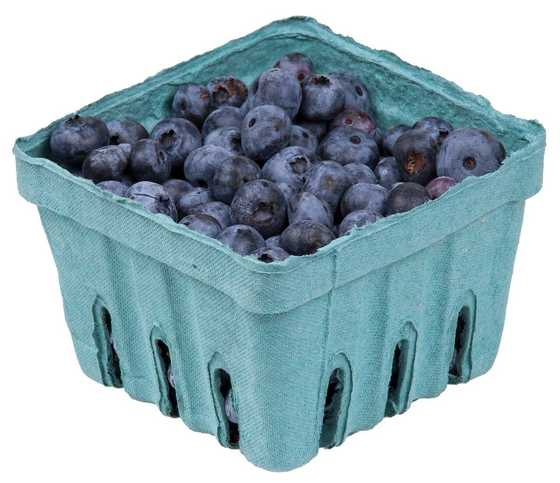
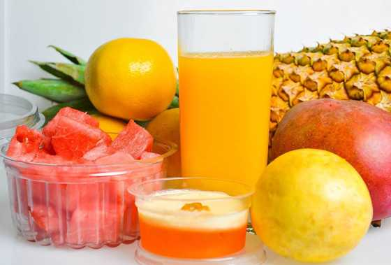
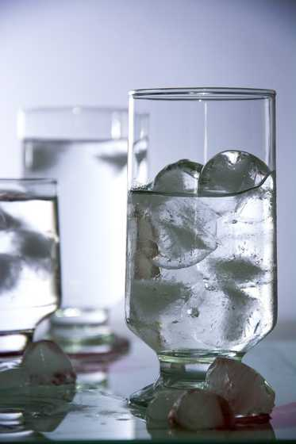
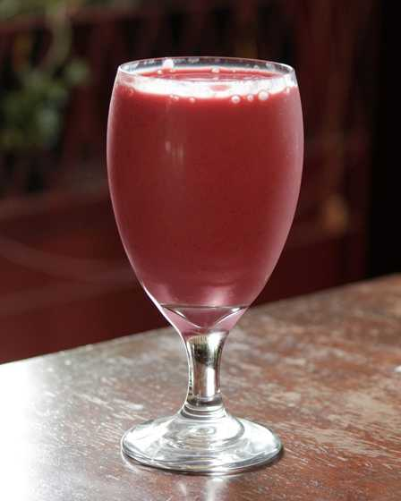
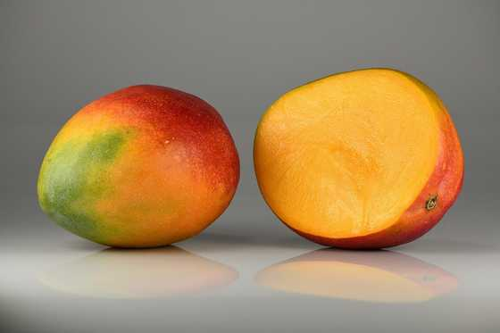
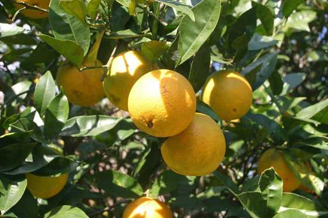

フルーツネード
旬の果物のシロップを、お好みの割り方で。
価格・詳細 準備中
豊後高田市・玉津商店街 / FRUITNADE
ムーンサンは、フルーツで作る自家製シロップを、ソーダや水、お湯で割っていただくフルーツネード専門店です。

お店のこと
紹介記事によると、ムーンサンは2020年3月、豊後高田市の玉津プラチナ通り(銀座商店街)にオープンした、昭和の町の新しい店舗です。古民家を改修した建物で、店主の瀧上暢子さんは「自分が楽しんでできることを形にしたい」と開業し、観光客だけでなく地元の人にも喜んでもらいたいと語っています。
「フルーツネード」は、「フルーツネードって何?」と興味を持ってもらうために生まれた造語で、レモネードをアレンジした飲み物とされています。果物の大きな実をスプーンですくって食べられる、「食べるジュース」のような一杯です。
情報源: 豊後高田市(開店の紹介) / たかだびより / じもしゅう / 大分ジャーニー / Instagram
店名の意味は確認できていません。見出しの言い回しは制作側の表現です。現在はイベント出店やキッチンカーでの営業が中心と紹介されることもあるため、営業日はInstagramでご確認ください。

メニュー
果物とてんさい糖・きび砂糖などで作った自家製シロップを、ソーダ・水・お湯などで割って、果肉ごとお楽しみいただくスタイルです。果物の組み合わせや内容は季節・仕入れにより変わります。

旬の果物のシロップを、お好みの割り方で。
価格・詳細 準備中

紅茶と合わせた一杯。
価格・詳細 準備中

クラッシュアイスのひんやり食感(夏季の店舗限定と紹介されています)。
価格・詳細 準備中
営業時間・定休日・価格・提供内容は変更されることがあるため、掲載せず「準備中」としています。店舗ではテイクアウトのみと紹介されています。








口コミ
イメージ例果物がごろっと入っていて、飲んだあとにスプーンですくって食べるのが楽しい一杯でした。
イメージ例商店街の散歩のおともに。しゅわっと爽やかで、暑い日にぴったりでした。
イメージ例季節ごとに果物が変わるので、また違う味を試しに行きたくなります。
上記は制作側が作成したイメージ例であり、実在のお客様の声ではありません。
アクセス
| 所在地 | 〒879-0606 大分県豊後高田市玉津403番地 |
|---|---|
| 電話 | 準備中 |
| 営業日・時間 | 準備中(最新情報はInstagramで発信されています) |
| SNS | Instagram @moonsun405 |